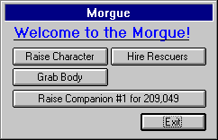

The City: Morgue

Keep in mind that one can also raise characters and companions with spells! For more information, see the section on Dying.
The only type of death the morgue cannot deal with is a character who has been fused with Rock.
In the morgue, you also have the option of hiring "Rescuers" to go down and try to bring up a dead character. Their success depends on how deep the rescuers must go and the given coordinates of the dead character. Also, a large sum of money is always involved whether or not the rescuers succeed.
To execute an option, click on the appropriate button and follow the given directions.
Move to the next section to read about the City Seer.
Move to the previous section to read about the City Bank.
M1: "The Depths of Dejenol" is a Trademark of Decklin's Domain Ltd and is © Copyright 1994-2026 All Rights Reserved